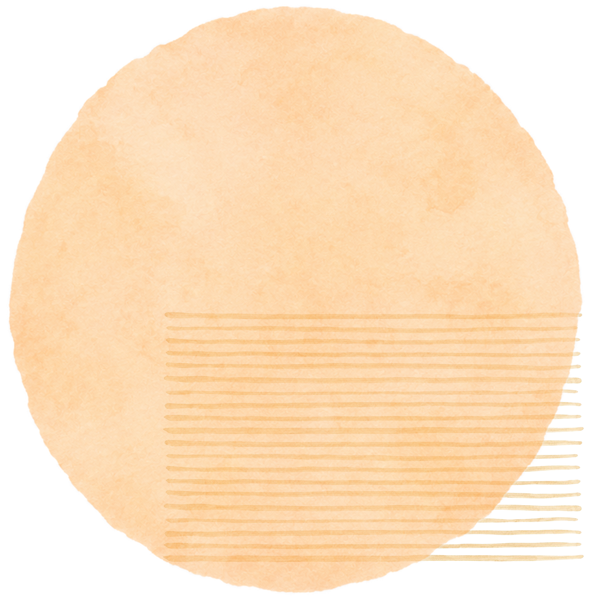
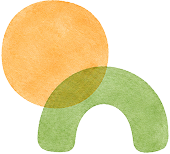
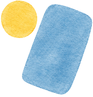
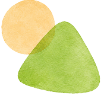

子どもの主体性を大切に
子ども自身が「やりたい」と思う気持ちを尊重。自分で考え、試し、学ぶ力を育みます。

定員40名 子どもに寄り添う 小さな保育園
FEATURE
子ども自身が「やりたい」と思う気持ちを尊重。自分で考え、試し、学ぶ力を育みます。


残業は月平均3時間程度。持ち帰りもほとんどなく、勤務後は自分や家族のための時間も大切にできます。

少人数のスタッフだから距離が近く、困ったことはすぐ相談できる環境です。ブランク明けの方も、ペースに合わせて無理なく慣れていけます。

急な体調不良にもみんなでカバー。有給取得率90％・産育休復帰率100％で、見学や相談から気軽にスタートできます。
DAILY SCHEDULE


子どもたちを笑顔でお迎え。保護者と一言コミュニケーション

歌や絵本、自由遊び。子どもの「やりたい！」を引き出す時間

手作り給食でほっとひと息。子どもたちと一緒に「おいしい！」

子どもがお昼寝の間に書類作成や休憩。メリハリのある仕事

おやつの後は好きな遊びを楽しむ。じっくり向き合える時間

今日の出来事を保護者にお伝え。お迎えを一緒に喜び合う
STAFF VOICE

新卒入職 3年目
子どもたちの「できた！」を毎日感じられる仕事です。小人数だから、一人ひとりの成長をていねいに見守れます。

中途入職 5年目
前職よりも残業が少なく、家庭との両立がしやすくなりました。困った時に相談しやすい雰囲気も安心です。

ブランク復帰 1年目
ブランクがあって不安でしたが、ゆっくり慣れていけるよう配慮してもらえました。子どもと丁寧に向き合えます。
RECRUITMENT
| 募集職種 | 保育士 |
|---|---|
| 雇用形態 | 正社員・パート |
| 仕事内容 | 0〜5歳児の保育業務全般、行事の準備、保護者対応など |
| 応募資格 | 保育士資格をお持ちの方 |
| 勤務地 | 陽だまりの森保育園 |
| 勤務時間 | 7:00〜19:00の間でシフト制 |
| 休日 | 日曜・祝日・年末年始、その他シフトによる |
| 給与 | 経験・能力を考慮のうえ決定 |
| 待遇 | 社会保険完備、交通費支給、研修制度あり |
| 応募方法 | エントリーフォームまたはお電話よりお問い合わせください |

FAQ
Aはい、未経験の方も歓迎しています。入職後は先輩スタッフがそばでサポートしながら、少しずつ仕事に慣れていただけます。
A基本的には平日のご案内となりますが、日程によってはご相談可能です。まずはお気軽にお問い合わせください。
A日々の業務を分担し、できるだけ残業や持ち帰りが発生しないようにしています。
A大丈夫です。久しぶりのお仕事復帰でも安心して働けるよう、周りのスタッフがサポートします。
A大丈夫です。得意なことを活かしながら、苦手なことはチームで補い合う保育を大切にしています。
Aはい、ご家庭の状況やご希望を伺いながら、無理のない働き方を一緒に考えます。

VISIT US
フォームまたはお電話からご連絡ください。
ご希望の日程を伺い、見学日を決定します。
園の雰囲気や働き方について、ゆっくりご案内します。